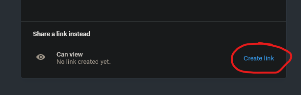

- To use this app fist create a drop box folder. You can find the new folder link on the right side of your dropbox interface:
- Create the folder with any name you whish
- Choose to share the folder

- Create a link for the share
- 
- Copy the link with the button provided
- In your Altspace world open the world editor and choose the basic catagory
- Select an sdk app object

- Paste or type the address of this application: http://